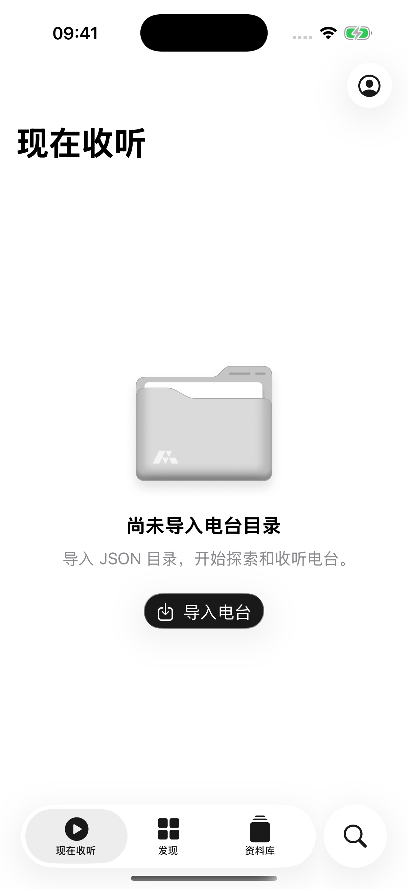

Download & import stations
One file. Your own listening library.
Full station directory
63,079 records · Snapshot 2026-11-04 · JSON 74.1 MB
Download station directory · JSONSave stations.json, then select it inside AirAtlas. No extraction or sign-in required.
File details & SHA-256Import on iPhone or iPad
- 1
Save the file
Tap Download and save stations.json in Files → Downloads. No extraction is needed. If using an in-app browser, open this page in Safari.
- 2
Locate the JSON
In Files → Downloads, check that the file is named stations.json and that the download is complete. If Safari opens text, use Share → Save to Files.
- 3
Import in AirAtlas
Open AirAtlas → Settings → App Settings → Import Stations. Select stations.json, wait for the preview, then tap Import and Replace Directory.
- 4
Start listening
Browse Listen Now, search categories, or explore stations on the Discover globe. Tap a station to play and use the star to save favorites.
Follow the app screens
Screens use demonstration data. Your stations depend on the file you import.

Before you import
- Import confirmation replaces this device’s imported directory. Export your current directory first if you want a backup. Favorites, manually added stations and history are retained.
- Import this file separately on iPhone and iPad. The full directory does not sync through iCloud; supported personal library data syncs separately.
- The JSON file contains station metadata and links only, not audio or embedded artwork. Directory metadata is public-domain community data. This does not grant rights to audio, logos or trademarks.
- This is a dated snapshot, not a live availability guarantee. Invalid entries may be skipped and some streams may be offline or restricted. Playback needs internet access. Use streams in accordance with provider terms.
Common questions
Why does the JSON open as text?
Save it to Files, then select it from Import Stations inside AirAtlas. Do not paste its contents into the app.
Why are some stations missing or silent?
The importer skips invalid records. A live address may also have changed or become unavailable; try another station or import an updated file.
Does this enable offline listening?
No. Station information can be stored locally, but live audio requires an internet connection.